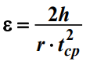
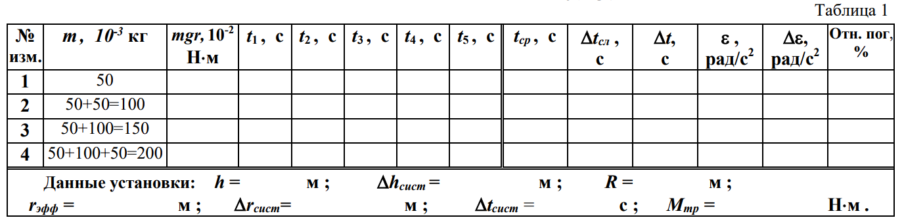
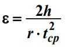
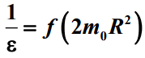

Задание 1
- Выберите шкив радиуса r = 2 см. Намотайте на него нить с платформой массой m = 50 г, которая сама будет грузом, определяющим момент силы тяжести.
- Установите грузы m0 (50 грамм) на спицах на расстоянии R от оси вращения, равном его среднему значению R = 10 см
- На платформу поместите груз массой 50 г (общая масса станет равной m1 = 100 г). Измерьте время движения груза t с указанной высоты h. Опыт повторите три – пять раз, данные занесите в таблицу 1
- На платформу поместите груз массой 100 г (общая масса m1 = 150 г). Также как в предыдущем пункте, измерьте три – пять раз время движения груза t с указанной высоты h.
- На платформу поместите грузы массами 100 г и 50 г, (общая масса станет равной m1 = 200 г). Также как в предыдущих пунктах, измерьте три – пять раз время движения груза t с указанной высоты h.
- Для каждого значения m определите среднее значение времени tср
- Используя tср, по формуле  определите среднее значение ускорения ε (здесь r = rэфф)
- По данным таблицы 1 постройте график зависимости углового ускорения ε от момента силы тяжести опускающегося груза mgr, т.е. ε = f(mgr) с соответствующими доверительными интервалами Δε
- Определите момент силы трения по отрезку, отсекаемому прямой ε = f(mgr) на оси моментов сил.
- 
Задание 2
- Выберите шкив радиуса r = 2 см
- Массу груза m1 на нити установите равной 100 г.
- В соответствии с таблицей 2 изменяйте момент инерции системы, меняя расстояния R грузов m0 до оси вращения.
- Для каждого из четырех случаев симметричных расположений грузов m0 на спицах маятника (расстояния от центров масс грузов до оси вращения измеряются линейкой) проведите три-пять измерений времени движения груза с заданной высоты h. Результаты занесите в таблицу 2.
- Для каждого значения R определите среднее значение времени tср
- Используя tср, по формуле  определите среднее значение (в таблице ε-1)
- По данным таблицы 2 постройте график зависимости  с соответствующими доверительными интервалами Δε-1
- По отрезку, отсекаемому прямой на оси моментов инерции, определите момент инерции маятника без грузов m0 (т.е., момента инерции шкивов и спиц)

Задание 3
- По данным приборов определите систематические погрешности Δtсист и Δhcист. Поскольку высота, с которой опускается груз каждый раз задается одинаковым образом, то можно считать, что Δhсл = 0.
- Рассчитайте случайные погрешности Δtсл в определении времени по формуле Δtсл = tn,a∙δ (δ - стандартный доверительный интервал, tn,a - коэффициент Стьюдента). Результаты вычислений занесите в таблицы 1 и 2
- Рассчитайте полные абсолютные погрешности Δt результатов измерения по формуле Δt = Δtсл + Δtсист. Результаты вычислений занесите в таблицы 1 и 2 соответственно
- Используя полученные значение Δt, рассчитайте относительные погрешности измерений по формуле
- Определите абсолютные погрешности Δε и Δε-1 по формулам Δε = ε∙отн.погр и Δε-1 = ε-1∙отн.погр, (относительную погрешность, взять в долях целого числа)
- По результатам работы сделайте соответствующие выводы.
- Примечания: Для студентов, стремящихся продемонстрировать повышенный уровень своих знаний, рекомендуется выполнять вычисления и построение графиков с использованием программы Microsoft Office Excel или других программ для работы с электронными таблицами. В этом случае обязательно наличие распечатки результатов.